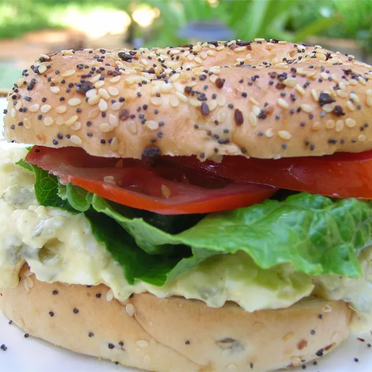

Sandwich

Description
Yummy sandwich or something like that.
Contains eggs and salad and stuff.
Yum.
Ingredients
- 8 hard-cooked eggs, peeled
- 3 tablespoons mayonnaise
- 1 tablespoon minced jalapeno pepper
- ½ tablespoon honey mustard
- ½ teaspoon black pepper
- ½ teaspoon garlic powder
- 1 pinch salt (Optional)
- 8 slices bread
- 24 leaves baby spinach
- 8 slices tomato
Steps
- In a medium bowl, mash the hard-cooked eggs with a fork or pastry blender. Mix in mayonnaise, honey mustard, and jalapeno. Season with black pepper, garlic powder, and salt.
- Spread egg mixture on four of the bread slices. Layer with baby spinach leaves and tomato slices, and top with remaining slices of bread.
Courtesy of https://www.allrecipes.com/recipe/139291/worlds-best-egg-salad-sandwich/